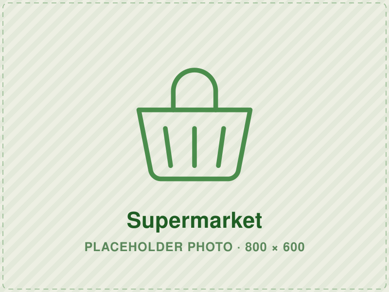

Mancherikalam Supermarket മാഞ്ചേരിക്കളം സൂപ്പർമാർക്കറ്റ്
Everyday groceries, provisions and household needs for
families in and around Karukachal.
കറുകച്ചാലിലെയും പരിസരത്തെയും കുടുംബങ്ങൾക്കായി
ദൈനംദിന പലവ്യഞ്ജനങ്ങളും വീട്ടുസാധനങ്ങളും.
Visit the Supermarket
സൂപ്പർമാർക്കറ്റ് കാണുക